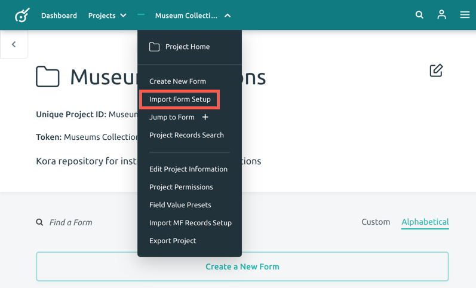
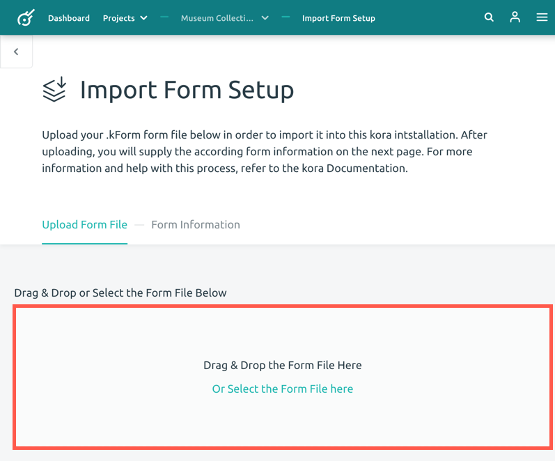
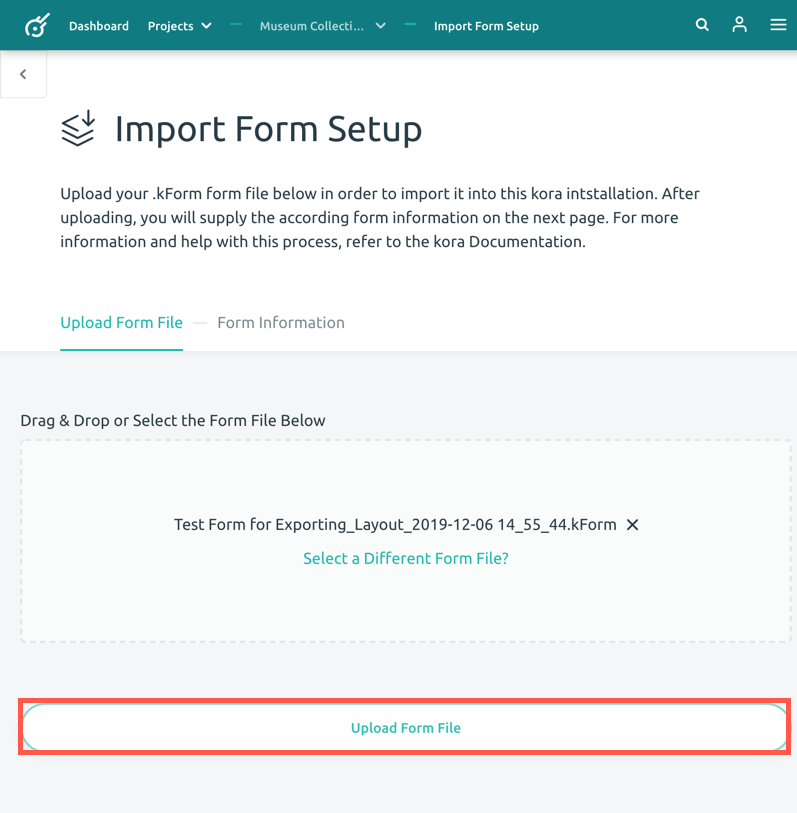
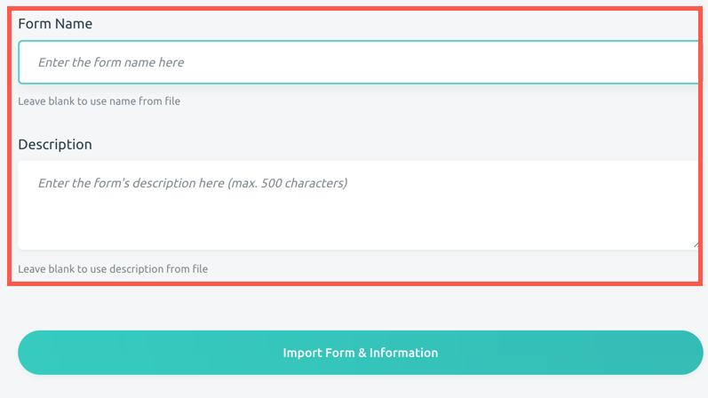
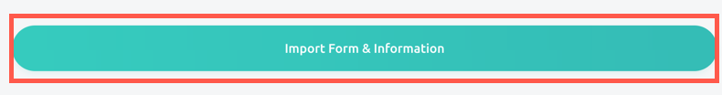

Importing a Form
Importing a form allows you to import a .kForm file from your computer into a Kora Project. Importing a form allows you to use a previously created form in a new or different project without having to recreate the form and its fields.
Follow the steps below to import a form.
-
Open the project you would like to import your form into. Click the project name in the blue menu bar to open the dropdown options. Click the Import Form Setup option.

-
In Import Form Setup, either drag and drop your form file from you computer into the box or choose the Select the Form File here option to choose it through a file browser.

-
Click the Upload Form File button.

-
Under the Form Information section, you have the option to enter a form name and description, or you can leave these options blank to use the name and description from the original form.

-
Press the Import Form & Information button.

This will automatically upload the form into your project.
Note: If you wish to learn how to export a form, visit the Exporting a Form Guide.